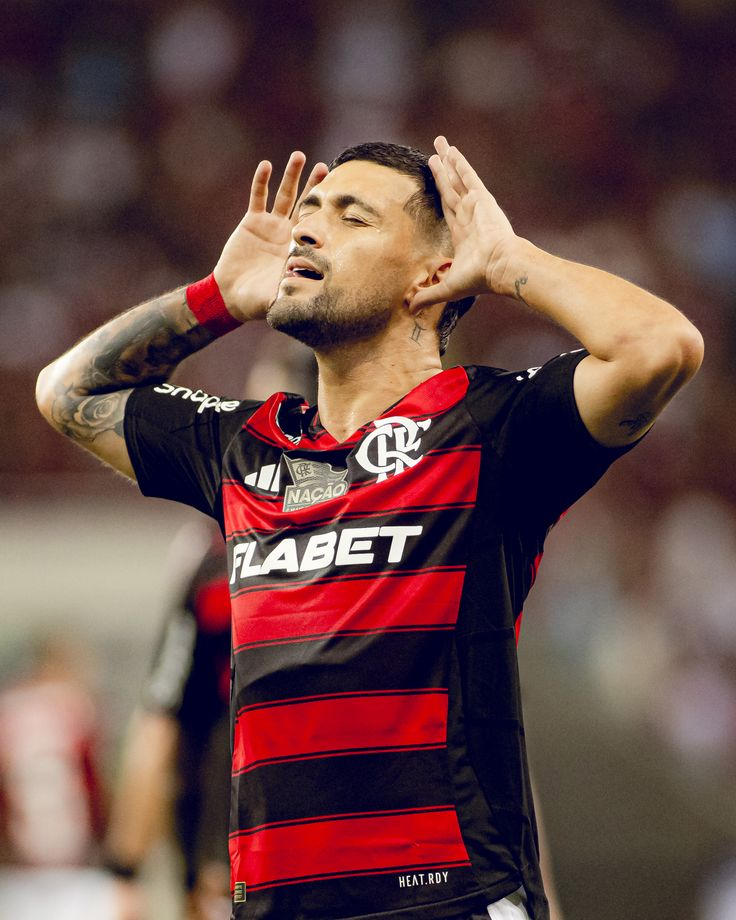
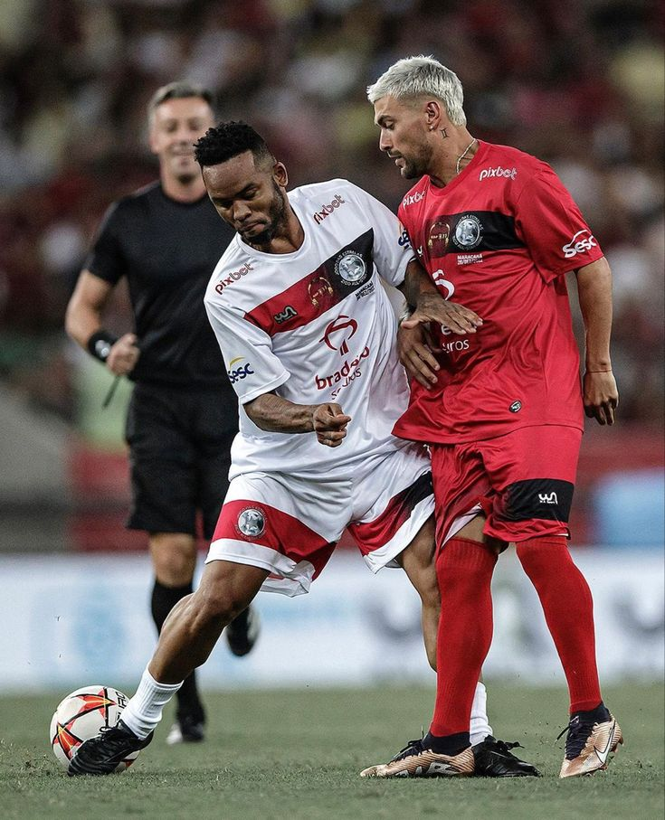
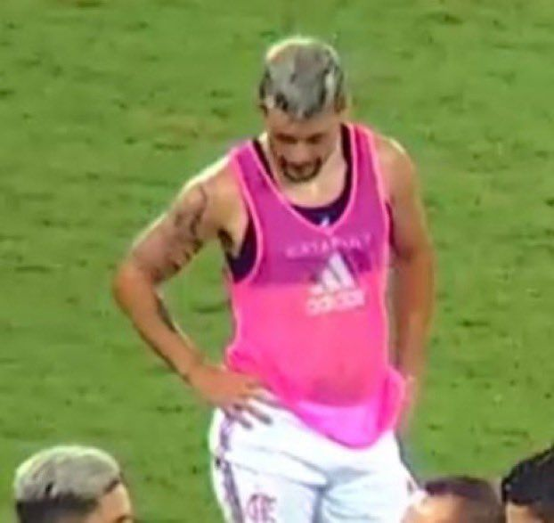
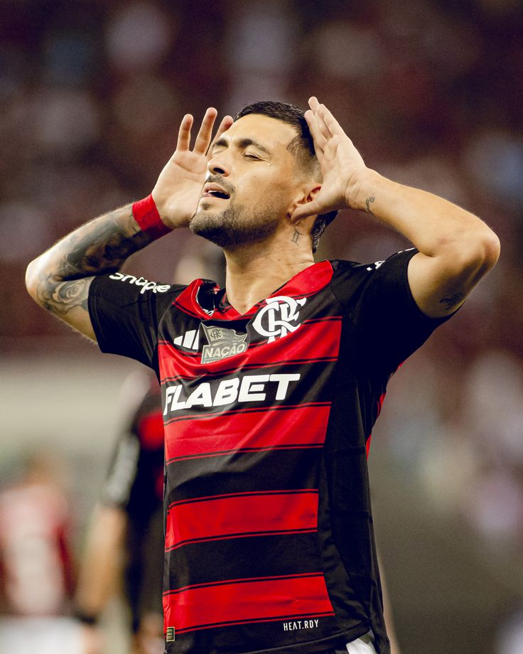
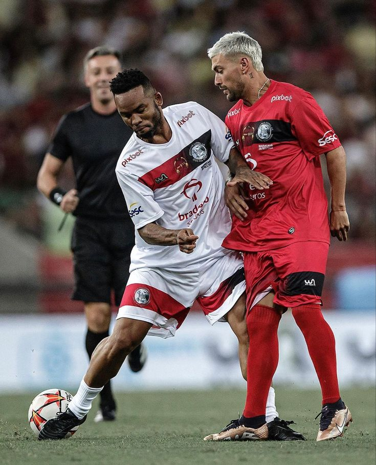
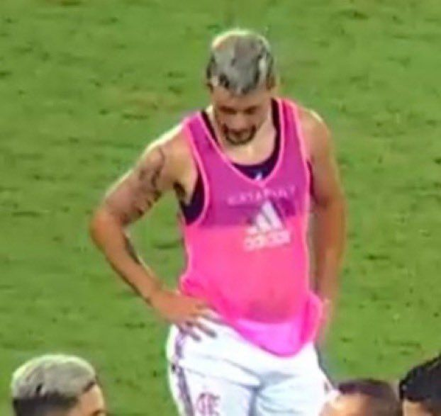
 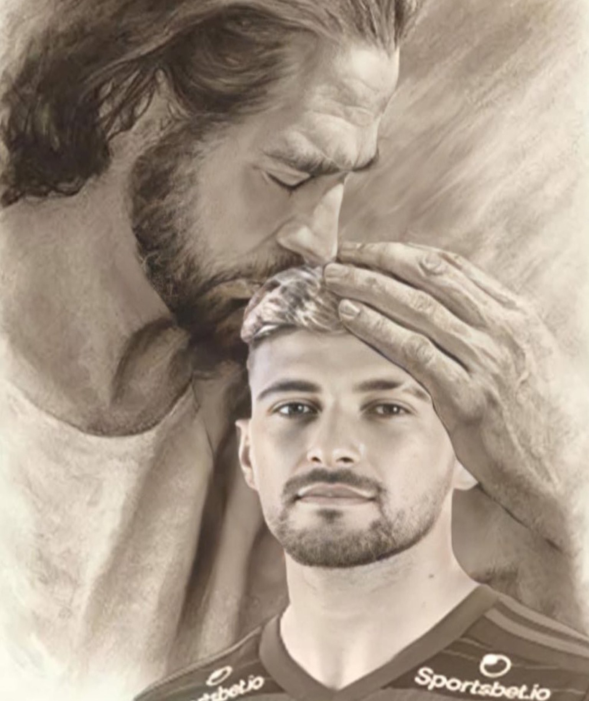
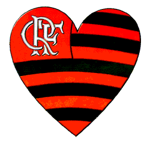
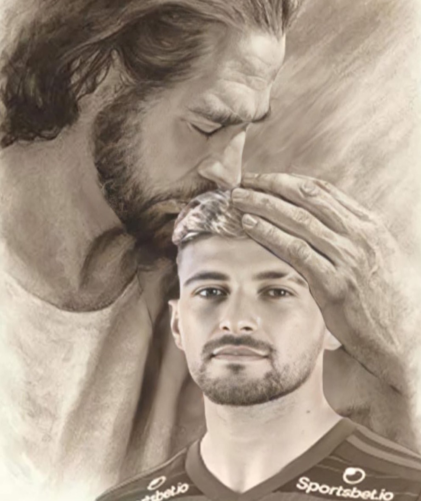
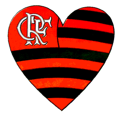
 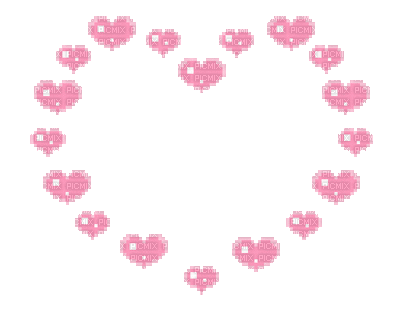
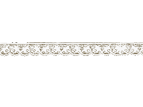
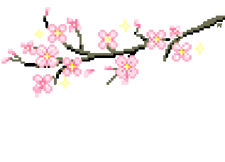
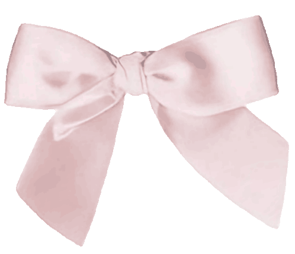
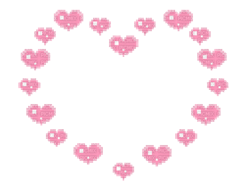
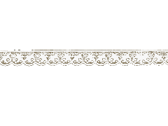
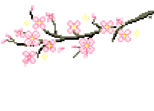
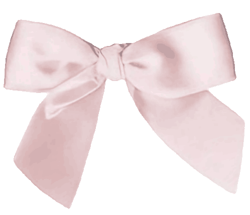
Site feito utilizando um estilo y2k e visual coquette para passar uma imagem descontraída e fofa, assim demonstrando afeto a pessoa que está recebendo essa homenagem. Te amo Arrasca ídolo 💞